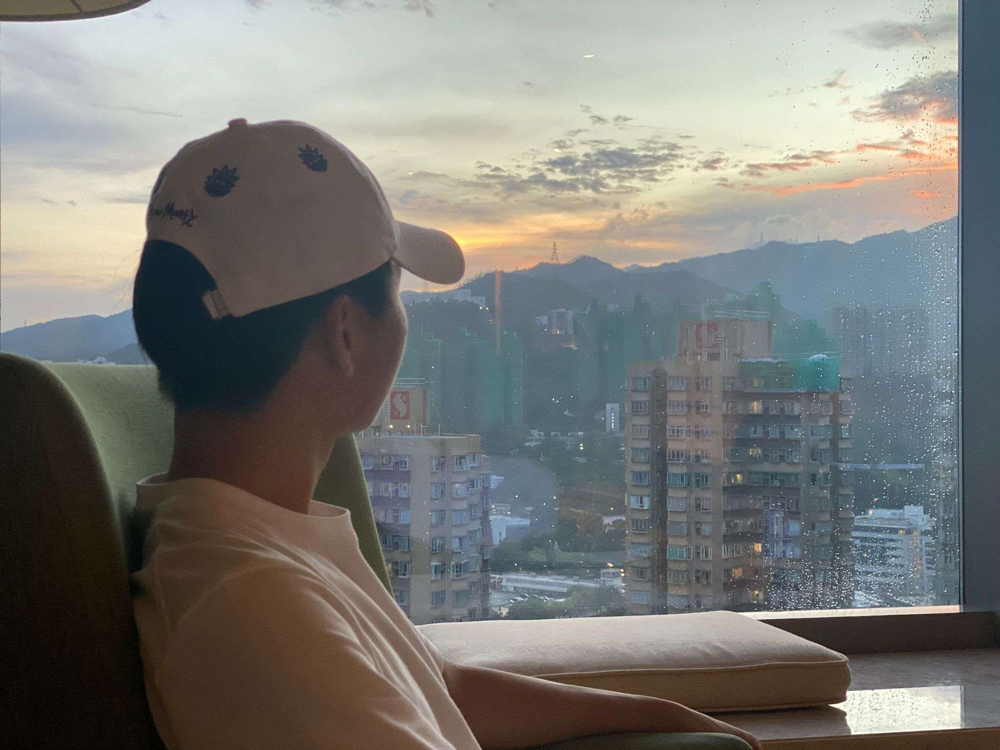
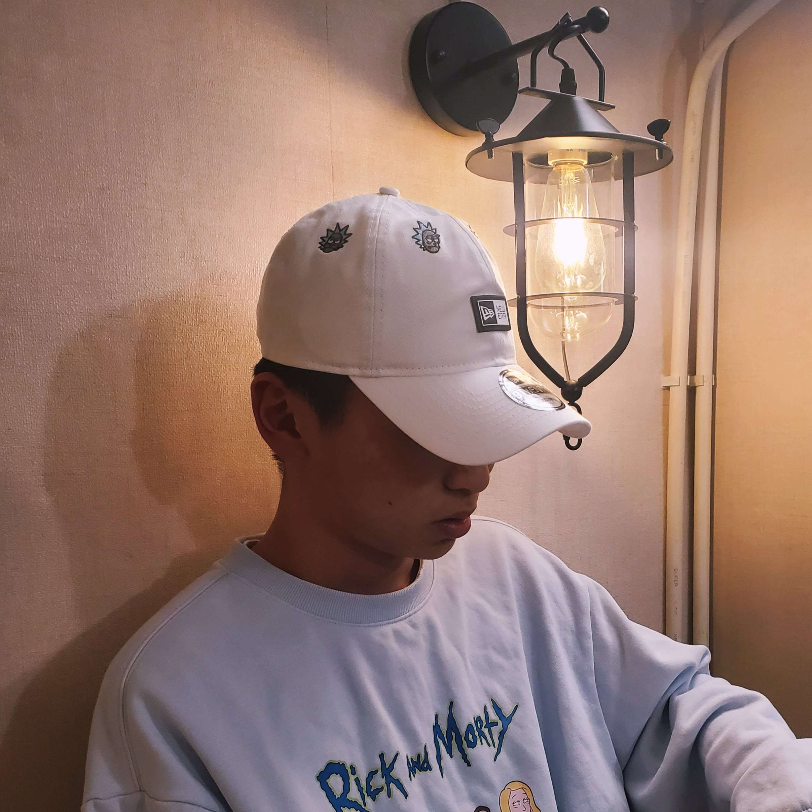

一半學生，一半做野。
2026 年於香港資訊科技學院完成資訊科技 / 軟件工程高級文憑。而家讀緊 Northumbria University BSc (Hons) Computing。
我在意做出嚟野，唔係整一套 slide。另外搞 Fluxith，做 NBA Peak Showdown 本地賽事、直播同贊助。
KEN。Northumbria 讀緊 BSc Computing。HKIIT HD 畢業，做過 Java、Flutter 同網頁。

GPA
3.39
HD
2026
BSc
Now
01 — 關於
2026 年於香港資訊科技學院完成資訊科技 / 軟件工程高級文憑。而家讀緊 Northumbria University BSc (Hons) Computing。
我在意做出嚟野，唔係整一套 slide。另外搞 Fluxith，做 NBA Peak Showdown 本地賽事、直播同贊助。

NOW
Northumbria · BSc (Hons) Computing
STACK
02 — 作品
WEB · COMMERCE
香港水晶網。天然晶石、手圍客製，由產品頁做到可以交俾人睇。
crystalthreadhk.com ↗
WEB · FAN SITE
個人向站。時間線、專輯頁、中英切換同背景音樂。
30006.vercel.app ↗
WEB · PWA
網頁版。情緒記錄、呼吸同 AI 對話，Cross-Strait 2026 港區入選作。
smartmind-demo-main.vercel.app ↗
ITP4511 · JAVA
診所流程系統。Maven、Java web，課程真案，唔係 todo list 克隆。
FLUTTER · 2026
網頁版背後嘅 Flutter 3D LERP 原型。入選 2026 海峽兩岸大學生創新賽香港區。
開網頁 demo ↗ITP4514 · CNN
Python CNN 課程，日常都用 local LLM 試原型，唔使次次開 cloud API。
COMMUNITY
NBA Peak Showdown 港台活動。Dynasty Cup、街頭 2v2、直播、贊助同反作弊標準。
03 — 計劃